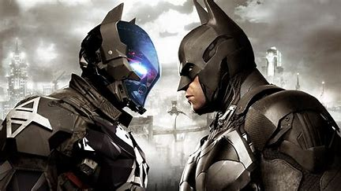
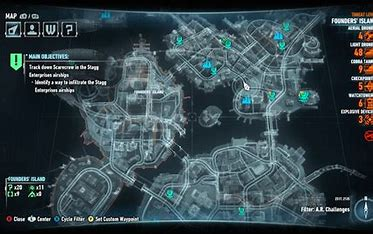

Introducción
Batman: Arkham Knight será el punto final a la serie Arkham. El juego muestra como, sin la presencia caótica del Joker, los ciudadanos de Gotham nunca se han sentido más seguros, y el crimen en la ciudad ha disminuido dramáticamente. Sin embargo, esto le ha dado a los enemigos de Batman, incluyendo al Pingüino, Dos Caras y Harley Quinn, la oportunidad de unirse con el único objetivo de matar al Caballero Oscuro. En la noche de Halloween, el Espantapájaros amenaza la ciudad con su recién creada variedad de la toxina del miedo, y bombas plantadas en toda Gotham, obligando a evacuar a los seis millones de civiles de la ciudad. Sólo los criminales permanecen en la ciudad, dejando al Comisionado Gordon y la Policía de Gotham City abrumados. Anticipándose a una nueva amenaza, Batman continúa desarrollando tecnología para combatir el crimen, y mantiene una vigilia sobre la ciudad.
Curiosidades
- Si se configura la fecha de la consola u ordenador al 31 de octubre de 2015, se tendrá que ir a hablar con Manbat una vez se lo haya atrapado. Luego cuando se sale y sube a un edificio se lo encontrara e intentara atacar, y al regresar al GCPD un podrá percatarse de que ha roto la celda de aislamiento y ha huido.
- En Ace Chemichals, en la cámara central se encontrara tirada en el piso la antigua máscara del Espantapájaros.
- Debido a la poca popularidad de Xbox One en Japón, la versión del videojuego para esa consola no se comercializó en aquel país.
- A pesar de que el joker haya muerto en la entrega anterior lo seguiremos viendo en este videojuego en forma de alucinaciones que nos estarán apareciendo a lo largo del juego y solo hasta el final del juego es que dejamos de verlo.
Mejoras
Batmovil
De manera única, el Batimóvil (diseñado por Lucius Fox) tenía la capacidad de transformarse, sobre la marcha, en "Modo Batalla", lo que le daba la apariencia de un tanque de batalla, con una distancia entre ejes más amplia y una mayor distancia al suelo. con varias armas y capacidades de movimiento, incluida una ametralladora Vulcan, un cañón de 60 mm, misiles, supresores de disturbios no letales, giro completo de la rueda de 360 grados y la capacidad de ametrallar con propulsores incorporados. Los enemigos que tocaron el Batimóvil fueron noqueados por una carga de electricidad. Otras características incluían un PEM para aturdir drones hostiles y derribar misiles en el aire, un virus de drones; un dispositivo que permitía hackear drones y volverse unos contra otros, y un Power Winch, para derribar paredes, o para permitir que el Batimóvil actuara como contrapeso. En ese modo, el Batimóvil no podía viajar a su velocidad máxima. Sin embargo, ganó la capacidad de moverse hacia los lados y en diagonal indefinidamente, lo que le dio total maniobrabilidad y control para los tiroteos.
Catwoman
Selina Kyle, también conocida por su alias Catwoman, era una huérfana que aprendió a sobrevivir en las calles de Gotham City. Se dedicó al robo para sobrevivir, pero estaba decidida a hacerlo a su propio estilo. Aprendió artes marciales y entrenó extensamente para perfeccionar sus propias habilidades en el robo de gatos. Sus actividades criminales a menudo se ven atenuadas por un altruismo reacio, lo que la convierte en una villana inconstante y una heroína ocasional. Roba objetos con nombres o motivos de felinos. Ella regularmente elude la captura del Caballero Oscuro, y mantiene una relación complicada y conflictiva con Batman que con frecuencia se vuelve coqueta y ocasionalmente romántica. A lo largo de los años, su relación se desarrolló hasta convertirse en aliados cada vez más confiables.
Nightwing
Nightwing permaneció en la mansión Wayne durante los eventos de Arkham City, resguardándola de la irrupción de cualquier intruso. Durante la activación del Protocolo 10, Hugo Strange envió a muchos guardias TYGER a la propiedad con la misión de matar a los aliados de Batman y descubrir más secretos. Sin embargo, auxiliado por Tim, Dick fue capaz de derrotar a los intrusos antes de la llegada de la policía.
El Villano Principal
Algún tiempo después de los sucesos de Batman: Arkham Origins, Jason Todd, después de que Dick Grayson decidiera hacerse una identidad propia, es elegido por Batman para ser el segundo Robin. Después de una cantidad desconocida de tiempo, el Joker secuestró a Todd y le envió a Batman un video del supuesto asesinato de Todd mientras que, en realidad, Todd estaba vivo y torturado por el Joker hace más de un año en un ala abandonada en el Asilo Arkham. Esto aparece en escenas de flashback en el juego donde el Joker destroza a Todd mentalmente, incluyendo mostrarle una foto de Batman y el nuevo Robin y diciéndole que Batman ya lo había reemplazado.
Aunque parezca que el Caballero de Arkham sea el villano principal, en realidad es el Espantapájaros, ya que desde un inicio amenaza toda Gotham City con una bomba de gas del miedo, y nuestro objetivo será detenerlo. A lo largo del juego se nos complica a tal punto que la bomba sí llega a explotar y tenemos que usar el Batmóvil para contrarrestar sus efectos negativos, y al final del juego ocurre una revelación que no deja de otra alternativa al caballero de la noche que "fingir su muerte" destruyendo todo.
Mapa de Arkham City
Como puedes ver, el mapa es más grande comparado al de su antecesor, la única diferencia es que no puedes entrar a todos los edificios. Cabe recalcar que en esta entrega hacen un salto gráfico impresionante.